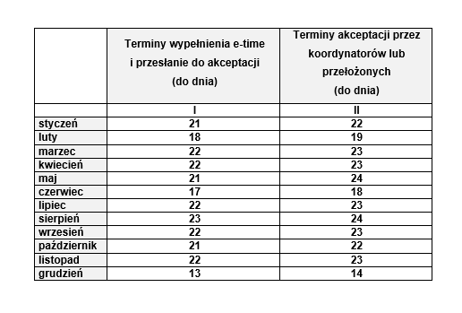

Etime - Terminy
Terminy wypełniania i akceptowania etime w 2021 roku dla wszystkich osób zobowiązanych do wypełniania niniejszej ewidencji.
Zwracam uwagę, że jedynie zatwierdzony etime będzie podstawą do naliczenia i zaksięgowania płac, dlatego bardzo proszę osoby odpowiedzialne za akceptację niniejszych ewidencji o przestrzeganie poniższych terminów.
Terminy wypełniania oraz zatwierdzania etime w roku 2021:
Jak co roku wyjątkowo wcześniej należy wypełnić etime w grudniu, wynika to z faktu konieczności przygotowania rozliczeń dla Company S.A.
Przypominam, że w etime:
• nie wypełniamy dni świątecznych – ustawowo wolnych od pracy, są one automatycznie ustawione jako dni niepracujące,
• samodzielnie wprowadzamy wszystkie nieobecności – zwolnienia lekarskie, urlopy i inne, zgodnie z rzeczywistością,
• konieczne jest uzupełnianie opisu działalności realizowanej w danym czasie, zwłaszcza w zakresie działalności twórczej – dane te uzupełniamy w komentarzu.
• Po terminie wypełnienia nie ma możliwości wykazania czynności twórczej.